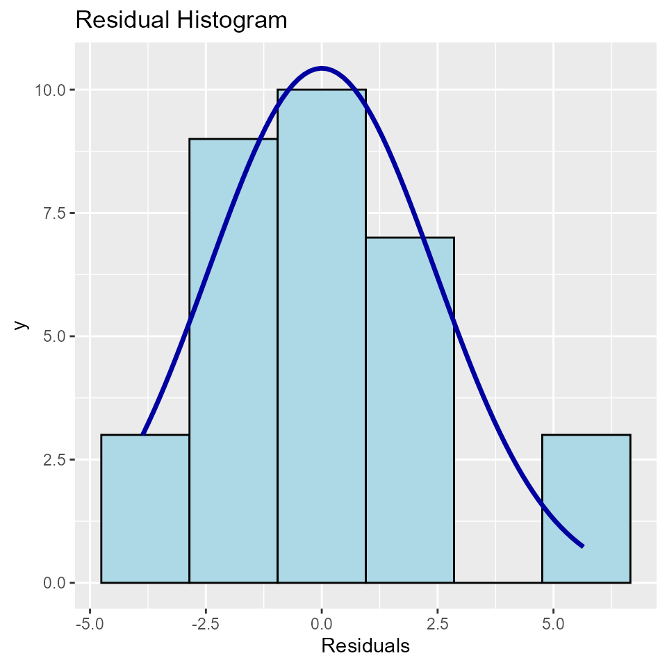

Introduction
olsrr offers tools for detecting violation of standard regression assumptions. Here we take a look at residual diagnostics. The standard regression assumptions include the following about residuals/errors:
- The error has a normal distribution (normality assumption).
- The errors have mean zero.
- The errors have same but unknown variance (homoscedasticity assumption).
- The error are independent of each other (independent errors assumption).
Residual QQ Plot
Graph for detecting violation of normality assumption.
model <- lm(mpg ~ disp + hp + wt + qsec, data = mtcars)
ols_plot_resid_qq(model)
Residual Normality Test
Test for detecting violation of normality assumption.
model <- lm(mpg ~ disp + hp + wt + qsec, data = mtcars)
ols_test_normality(model)## -----------------------------------------------
## Test Statistic pvalue
## -----------------------------------------------
## Shapiro-Wilk 0.9366 0.0600
## Kolmogorov-Smirnov 0.1152 0.7464
## Cramer-von Mises 2.8122 0.0000
## Anderson-Darling 0.5859 0.1188
## -----------------------------------------------Correlation between observed residuals and expected residuals under normality.
model <- lm(mpg ~ disp + hp + wt + qsec, data = mtcars)
ols_test_correlation(model)## [1] 0.970066Residual vs Fitted Values Plot
It is a scatter plot of residuals on the y axis and fitted values on the x axis to detect non-linearity, unequal error variances, and outliers.
Characteristics of a well behaved residual vs fitted plot:
- The residuals spread randomly around the 0 line indicating that the relationship is linear.
- The residuals form an approximate horizontal band around the 0 line indicating homogeneity of error variance.
- No one residual is visibly away from the random pattern of the residuals indicating that there are no outliers.
model <- lm(mpg ~ disp + hp + wt + qsec, data = mtcars)
ols_plot_resid_fit(model)
Residual Histogram
Histogram of residuals for detecting violation of normality assumption.
model <- lm(mpg ~ disp + hp + wt + qsec, data = mtcars)
ols_plot_resid_hist(model)